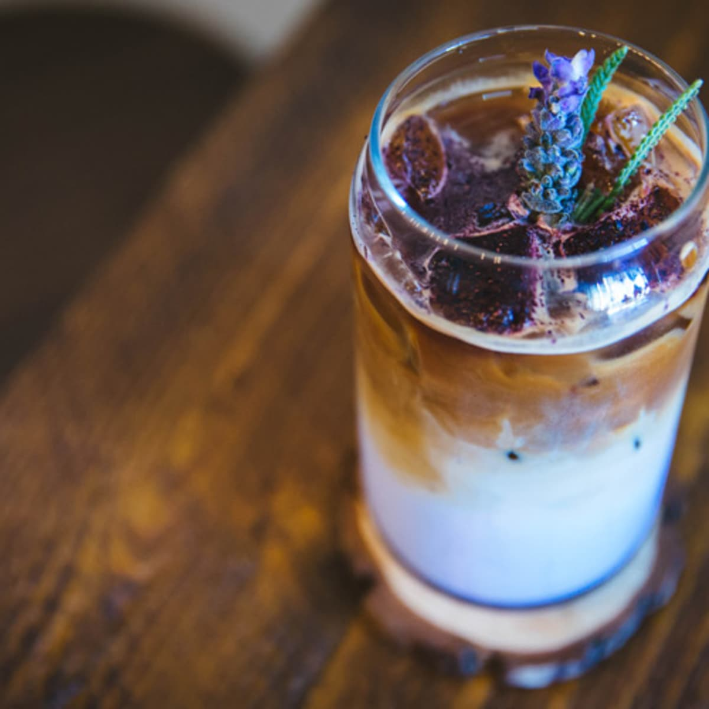
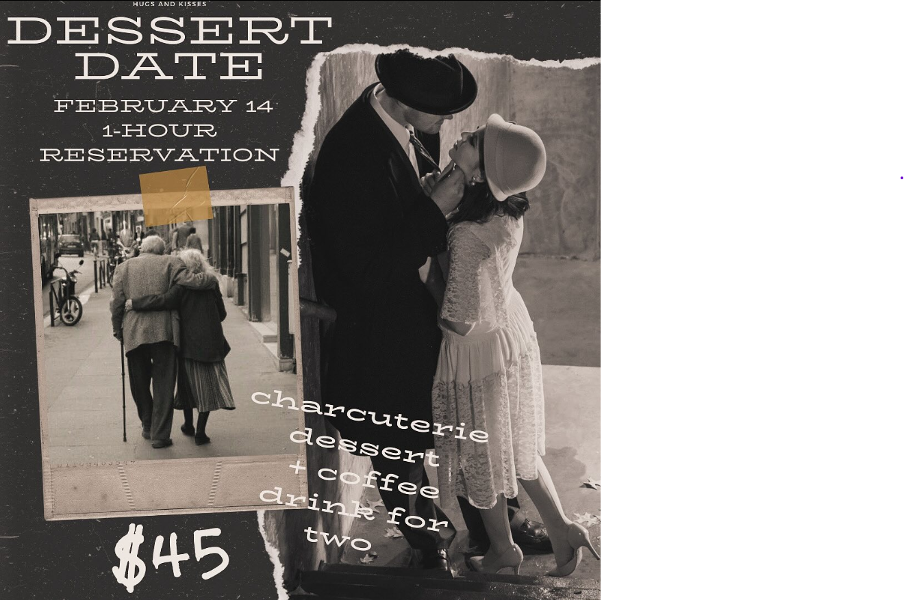

Barista Picks
The barista pick of the week was chosing oh so carefully by our barista, Chris! Chris is so passionate about where his beans come from and their stories. This special drink is an Iced blonde lavendar latte. The bright flavors from the espresso derives from the Latin America and African regions in the coffee belt. These climates produce slightly chocolatey and floral/citrus notes which we think pairs great with the lavendar.
Local Events
We're hosting a dessert date! Do you want to treat your loved one with a romantic, stress-free night whilst enjoying their favorite cup of joe and a beautiful charcuterie board to pair? Join us on February 14 with a 1 hour reservation.